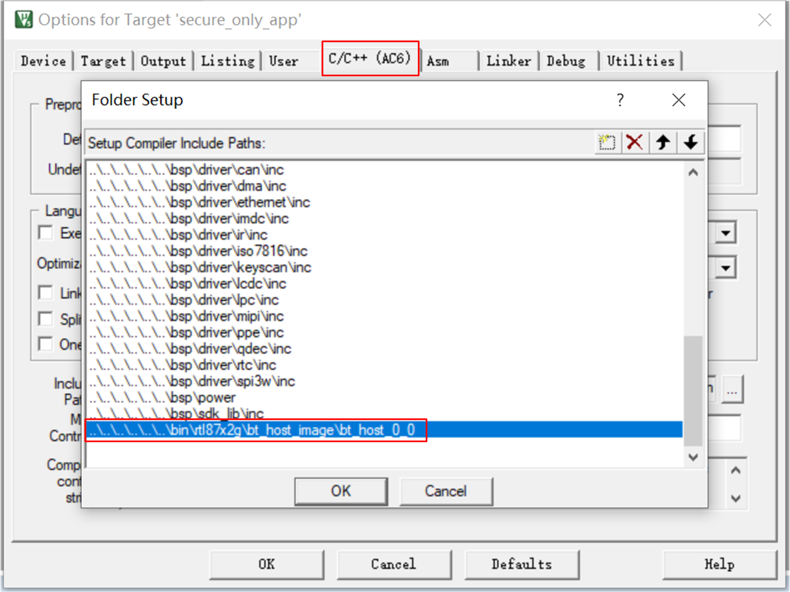

Host Image
本篇文档用于对 Bluetooth Host 及 GAP LIB 做一个简要的概述。
Bluetooth Host 实现 Bluetooth 的 Host 部分，使用 Bluetooth Host image 方案，提供单独的 Bluetooth Host image 供烧录，Bluetooth Host 和 APP 的升级是互相独立的。更多信息参见 Image 版本管理 和 Bluetooth Host Image 的使用方法 。
GAP LIB 用于提供 Bluetooth Host 的入口函数。 Bluetooth Host image 应与对应的 GAP LIB 配合使用。更多信息参见 GAP LIB。
Image 版本管理
Bluetooth Host image 提供不同配置的 Bluetooth Host，用 bt_host_A_B 来表示。 A 和 B 的含义如下：
- A 表示支持的蓝牙技术功能。如果多版 Bluetooth Host 含有相同的 A 值，那么这些 Bluetooth Host 支持的蓝牙技术功能相同。具体支持的蓝牙技术功能请参考
bin\rtl87x2g\bt_host_image\bt_host_A_B\bt_host_config.h，该文件的使用将在章节 Bluetooth Host Features 配置 详细介绍。 - B 表示 Bluetooth Host 的 flash size 和 RAM size 的配置。具体配置详情请参考
bin\rtl87x2g\bt_host_image\readme。
Bluetooth Host Features 配置
每一版 Bluetooth Host 都会提供一份 bt_host_config.h 文件供 APP 使用。 该文件给出支持的蓝牙技术功能对应的宏定义， 0 表示不支持该 feature， 1 表示支持。宏定义和蓝牙技术功能的对应关系可参考下方表格：
Spec Version |
Bluetooth technology |
Macro Definition |
|---|---|---|
Bluetooth 4.0 |
Advertiser |
|
Scanner |
|
|
Initiator |
||
Central |
|
|
Peripheral |
|
|
Bluetooth 4.1 |
Low Duty Cycle Directed Advertising |
|
LE L2CAP Connection Oriented Channel |
||
LE Scatternet |
||
LE Ping |
||
Bluetooth 4.2 |
LE Data Packet Length Extension |
|
LE Secure Connections |
|
|
Link Layer Privacy (Privacy1.2) |
|
|
Link Layer Extended Filter Policies |
|
|
Bluetooth 5 |
2 Msym/s PHY for LE |
|
LE Long Range |
|
|
High Duty Cycle Non-Connectable Advertising |
||
LE Advertising Extensions |
|
|
|
||
Bluetooth 5.1 |
Angle of Arrival (AoA) and Angle of Departure (AoD) |
|
GATT Caching |
||
Periodic Advertising Sync Transfer |
|
|
Bluetooth 5.2 |
LE Isochronous Channels |
|
Enhanced Attribute Protocol |
||
LE Power Control |
|
|
Bluetooth 5.3 |
LE Channel Classification |
|
当 Bluetooth Host 支持某个 feature 时，APP 才可以调用相应的 API。
例如，Bluetooth Host 支持 F_BT_LE_READ_CHANN_MAP。
#define F_BT_LE_READ_CHANN_MAP (F_BT_LE_SUPPORT && 1)
APP 可以通过调用 le_read_chann_map() 接口获取到 channel map。
/**
* @brief Read the used channel map of the connection. Channel map value will be returned by
* @ref app_gap_callback with cb_type @ref GAP_MSG_LE_READ_CHANN_MAP.
*
* @param[in] conn_id Connection ID.
* @return Read request result.
* @retval GAP_CAUSE_SUCCESS: Read request sent success.
* @retval GAP_CAUSE_NON_CONN: Read request sent fail.
*/
T_GAP_CAUSE le_read_chann_map(uint8_t conn_id);
Bluetooth Host Image 配置
Bluetooth Host image 配置如下表所示：
Bluetooth Host Image |
Image Directory |
Flash Size |
RAM Size |
Reference Project |
|---|---|---|---|---|
|
|
212K |
3K |
|
|
|
148K |
3K |
bin\rtl87x2g\bt_host_image 路径下存放的 readme 文件对不同配置的 Bluetooth Host image 进行了说明。
bt_host_0_0 为默认版本的 Bluetooth Host image。Bluetooth Host 具体支持的蓝牙技术功能请参考 bt_host_config.h 文件。
Bluetooth Host image 包含的具体文件和路径如下表所示：
Bluetooth Host Configuration |
Files of Bluetooth Host |
|---|---|
|
|
|
|
|
|
|
|
|
|
|
|
|
|
|
APP image 和 Bluetooth Host image 的升级是互相独立的，更新 Bluetooth Host image，APP 不需要重新编译。
Bluetooth Host Image 的使用方法
当使用 Bluetooth Host image 方案时，需要在 APP 的 Include Paths 中添加对应 bt_host_config.h 文件的路径。这一步是必要的，因为不同配置的 Bluetooth Host image 对应的 RAM size 可能不一样。同时，APP 还需相应修改 mem_config.h 文件。
RAM size 参数请参考表-不同配置的 Bluetooth Host Image 或者 bin\rtl87x2g\bt_host_image\readme 文件。
例如：当 APP 使用 bt_host_0_0 时，从 readme 文件中得到 Bluetooth Host 的 RAM size 为 3K。
/*================================================================*
* bt_host_0_0 *
*================================================================*/
If Application uses bt_host_0_0, Application should configure NS_RAM_UPPERSTACK_SIZE as value which is larger than or equal to (3 * 1024) in mem_config.h of Application.
/** @brief data ram size for upperstack global variables and code */
#define NS_RAM_UPPERSTACK_SIZE (3*1024)
APP 的 mem_config.h 文件中， NS_RAM_UPPERSTACK_SIZE 的值应设置为大于等于 3K。
/** @brief data ram size for upperstack global variables and code */
#define NS_RAM_UPPERSTACK_SIZE (3 * 1024)
APP 的 Include Paths 设置如下图所示：
{kind=link}

Include Paths
GAP LIB
GAP LIB 用于提供 Bluetooth Host 的入口函数，为 APP 提供 GAP 扩展功能。
GAP 扩展功能
- Vendor 功能模块
提供一些厂家自定义的扩展功能。 更多信息参见
subsys\bluetooth\gap_ext\inc\gap_vendor.h。
GAP LIB 的使用方法
APP 需要在工程中添加 gap_utils.lib。APP 添加的 gap_utils.lib 应与所使用的 Bluetooth Host image 对应。GAP LIB 的存储路径：subsys\bluetooth\gap_ext\lib\rtl87x2g\bt_host_A_B。
比方说，当 APP 使用 bt_host_0_0 文件夹中的 image 时，应在工程中添加的对应 gap_utils.lib 位于路径 subsys\bluetooth\gap_ext\lib\rtl87x2g\bt_host_0_0 中。
└── Project: broadcast
└── secure_only_app
└── Device
├── CMSE Library
├── Lib includes all binary symbol files that user APP is built on
├── ROM_NS.lib
└── lowerstack.lib
└── rtl87x2g_sdk.lib
└── gap_utils.lib includes gap_utils.lib
├── Peripheral
├── Profile
└── APP
在使用扩展功能之前，APP 需要调用 gap_lib_init() 初始化 gap_utils.lib 。
int main(void)
{
......
gap_lib_init();
......
task_init();
os_sched_start();
return 0;
}
替换 Bluetooth Host Image
如果 APP 需要使用不同的蓝牙技术功能，那么 APP 需要根据实际情况同步替换 Bluetooth Host image。
例如，如果 APP 要用 bt_host_3_0 替换 bt_host_0_0 ，应按以下步骤操作:
下载
bin\rtl87x2g\bt_host_image\bt_host_3_0\bt_host_MP_xxxx.bin。将 APP 工程中 Bluetooth Host image 的 Include Path 改成
bin\rtl87x2g\bt_host_image\bt_host_3_0。将 APP 工程中使用的 GAP LIB 替换成
subsys\bluetooth\gap_ext\lib\rtl87x2g\bt_host_3_0\mdk\gap_utils.lib。mem_config.h文件中，NS_RAM_UPPERSTACK_SIZE的值需要参照bin\rtl87x2g\bt_host_image\readme中bt_host_3_0的配置配合修改。